地域猫活動に特化したプロトタイプ：対話入力からタスク提示・書類作成・台帳連携までを一貫処理
①対話による自然な情報入力
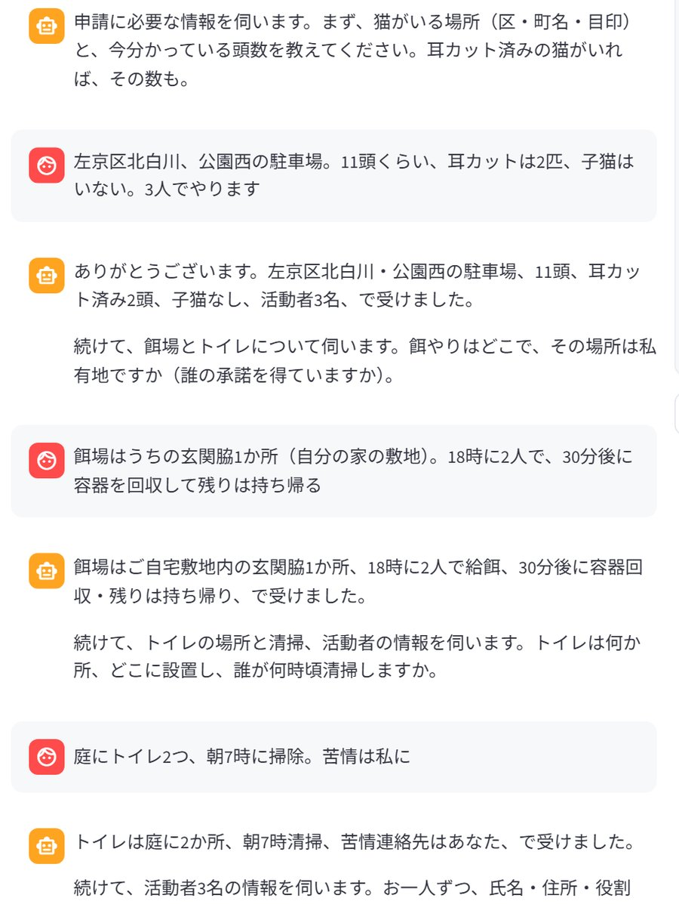
②次のタスク案内と指定様式の自動出力

③台帳への自動反映
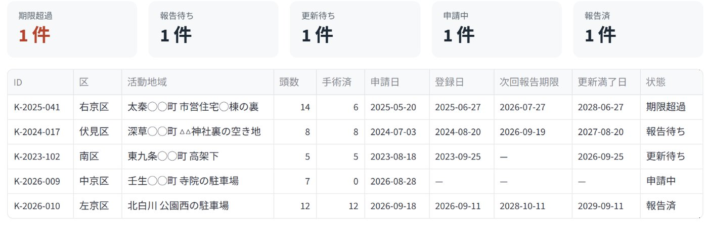
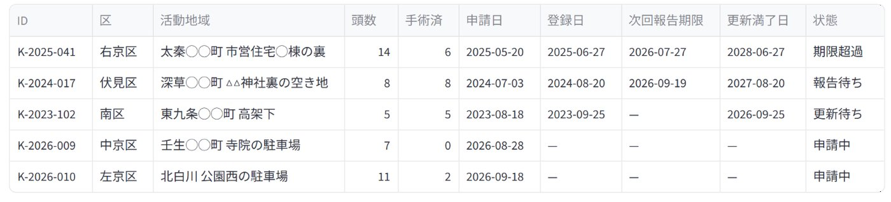
K-2026-010 が「申請中」で載り、報告後に「報告済」になる
プロトタイプ（Streamlit／DeepSeek API）。京都市・高島市で動作。画面はプロトタイプの実画面。会話・判定・転記は deepseek-chat の実応答。9
VORN Challenge 2026 応募作品
ネコノテ
チーム シーサーズ
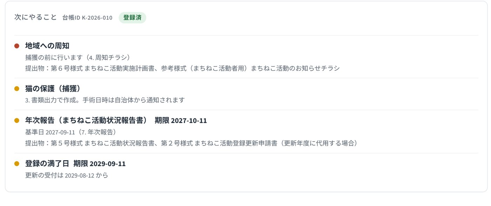
市民向け画面：開くだけで「いま次に行うべきこと」を提示
京都市は要綱16条と6様式があり、登録期間は3年、年1回の報告義務（期限30日以内）が課される。高島市は毎月6日〜末日の申請で翌々月分のチケットが交付され、写真付き報告が必要となる。函館市は個人申請不可で団体登録が必須であり、広島市は年度末区切りで途中の増頭は別扱いとなるなど、運用ルールは自治体ごとに分断されている。
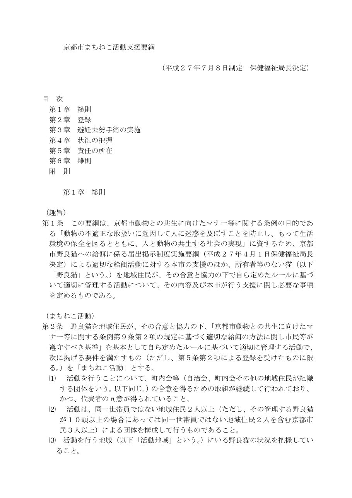
京都市まちねこ活動支援要綱（PDF、16条）
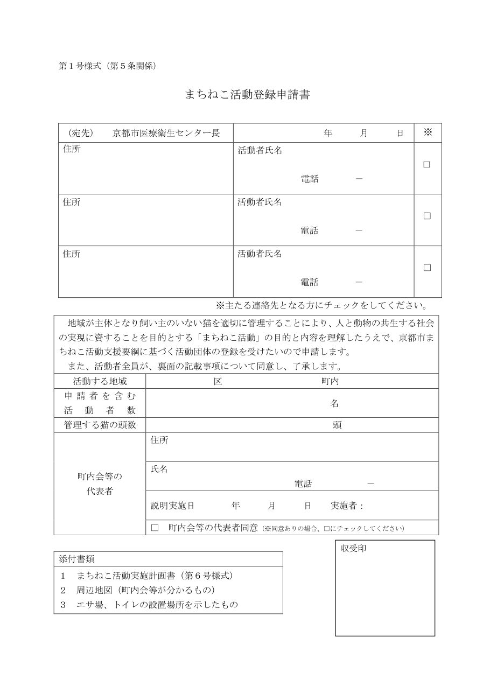
京都市 第1号様式 登録申請書（DOCX配布。要綱PDF内の様式）
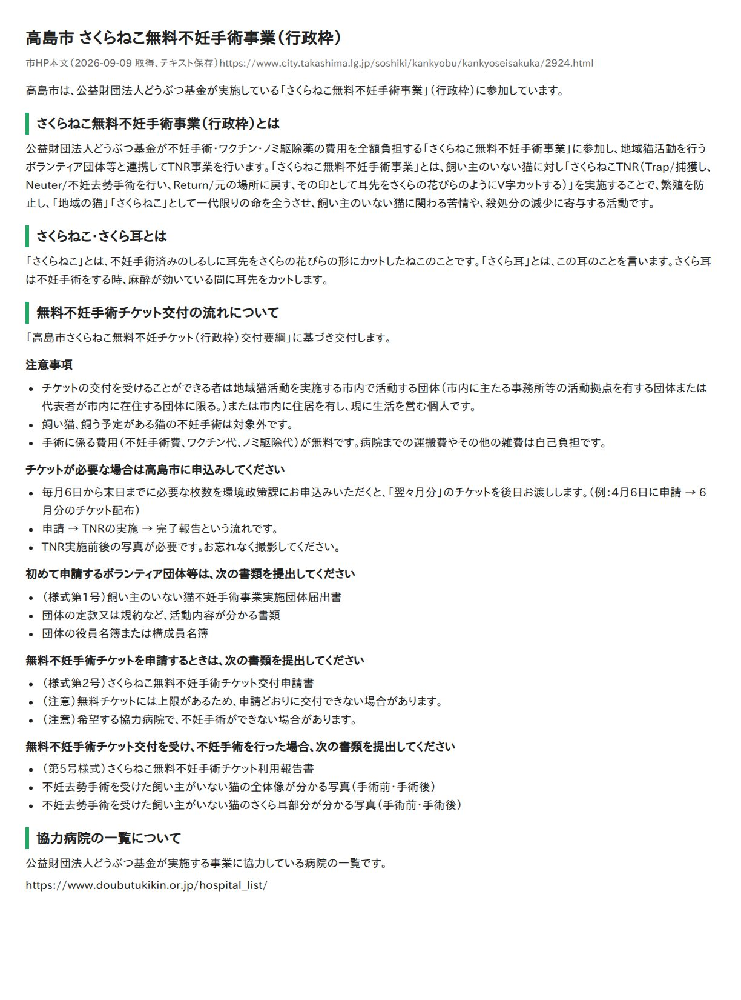
高島市 環境政策課ページ本文（受付は毎月6日〜末日、翌々月分）
担い手は少なく、高齢で、後継がいない。
京都市の場合。同意が取れた後から3年更新まで、11段。
青要綱と期日管理に関わる事務（本システムによる代替対象） 赤対人調整・現場作業（人集め・説明・捕獲） 灰その他
1自治体あたりの担い手は数十〜数百人規模（推定）にとどまる一方、協働自治体は298にのぼり、要綱は自治体ごとに異なる。私たちが調べた範囲では汎用ツールが存在しないため、現場では電話、LINE、Excel、紙によるアナログな手作業が続いている。
それぞれの悩み
要綱が読めない。期限を忘れる。電話が平日しか通じない。
不備で往復。電話の一次対応。登録地域の現況が報告頼み。
苦情を出しても行政は収容しない。活動が始まるまで解決手段がない。
持込頭数と時期が読めない（推定）。
要綱PDF・様式DOCX・FAQを構造化せずそのまま読み込み、適用条件と期限を抽出
「活動場所・頭数・自治体・現在日」に合わせた必要情報へ再構成
登録日から期限を自動計算し、適切なタイミングで申請を促す
規則をコードに持たず、要綱資料を差し替えるだけで他自治体に対応
4枚目の工程のうち、事務手続きに関わる7つ（①④⑥⑦⑨⑩⑪）と不備の差し戻し（⑤）をAIで代替。
対人折衝や捕獲（②③⑧）など人が向き合うべき実務に集中できる環境をつくる。



K-2026-010 が「申請中」で載り、報告後に「報告済」になる

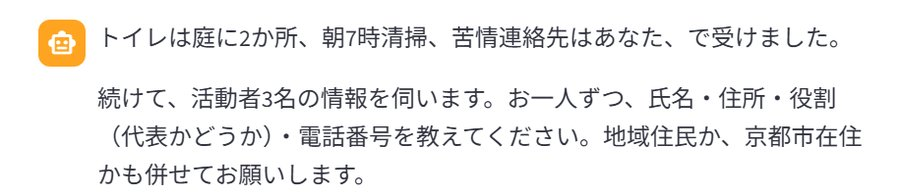
入力は自然文。要綱の条件はAI側が持つ。集めるのは第1号様式・第6号様式に必要な項目だけ。
捕獲手順や自治会折衝、里親探しなどの相談には踏み込まず、事務手続きの支援に特化する安全設計。
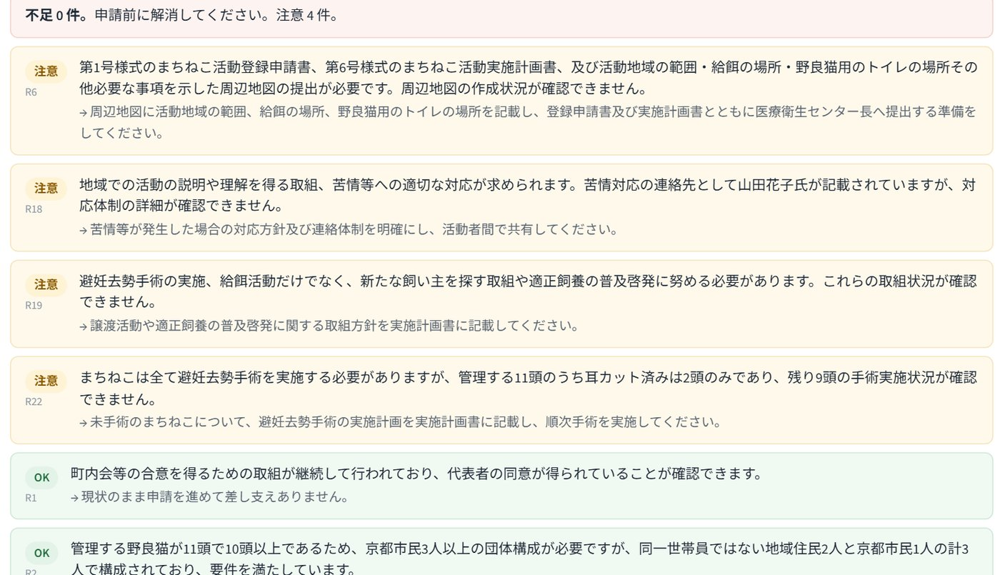
判定（不足0件・注意4件）。周辺地図の添付は要綱第5条、未手術9頭の計画は申請書裏面⑷から。R2は「11頭で10頭以上のため京都市民3人以上」を第2条⑵から判定してOK。規則ごとに出典と引用が付く。
次にやること。台帳の状態が変わると項目が入れ替わる。
申請前は「提出」、登録後は「周知」「手術申請」「報告期限」「満了日」へと自動で切り替わる。担い手が要綱の細則や期限を記憶し続ける負担を解消する。
登録申請書（第1号）に加え、実施計画書（第6号）、手術申請書（第4号）、活動報告書（第5号）にも対応。出力書類を印刷して提出するだけの状態に整える。
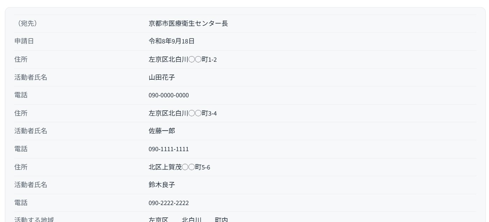
画面上の項目一覧。「要確認」は記載例と照らして確認が要る欄。
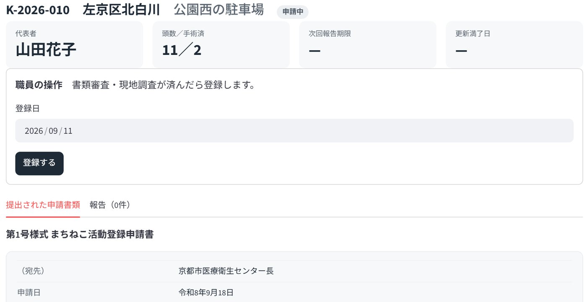
事前チェックを経た不備のない申請データを受理でき、差し戻し対応を削減。
活動地域数の推移について、正常終了なのか未更新による脱落なのか実態を正確に把握可能。
台帳データは日々の申請・報告から自動集約されるため、引き継ぎ用の追加手入力は不要。
状態は要綱の期日ルール（報告は登録日と同月日から30日以内、更新は満了日の30日前から）と報告履歴から計算。
| 以前 | 今 |
|---|---|
| ①要綱の読解に苦慮 | 対話を通じて該当条文と要件を提示 |
| ④指定様式への手書き作成 | 配布DOCXフォーマットへ自動転記 |
| ⑤不備による差し戻し | 提出前の事前チェックで不備を解消 |
| ⑥開庁時間内の電話問い合わせ | 24時間いつでも対話形式で確認可能 |
| ⑦受付日・有効期限の自己管理 | 自動計算により期日に促す（高島市：逃すと+30日、を事前に可視化） |
| ⑨⑩報告・更新忘れによる職権抹消 | 期日前の通知と簡単な対話で報告様式を生成 |
| ⑪担い手の離脱による活動記録の喪失 | 行政台帳へデータが蓄積され確実に引き継がれる |
システムで代替せず人が担うべき領域：合意形成と捕獲実務（②人集め ③町内会への説明 ⑧捕獲）
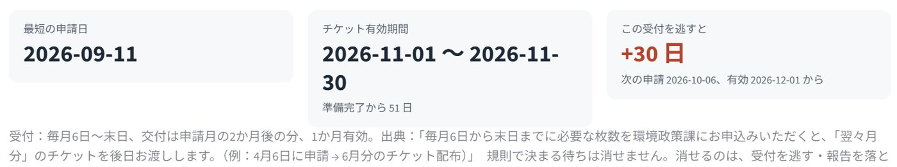
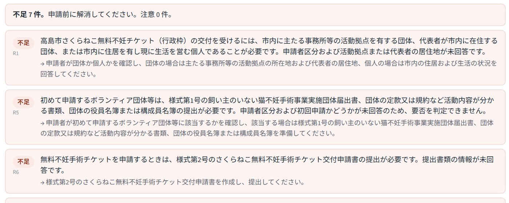
高島市の資料から抽出した規則に照らした判定。聞き取りを3往復で止めた状態のため、申請者区分などが未回答で不足7件。受付の値は市HP本文から抽出。交付要綱PDFは未取得。
京都市（登録型）と高島市（基金チケット型）は仕組みが違うが、同じ画面・同じコード。
「住民申請・厳密な期限管理・定期報告と更新・ボランティアへの依存」という構造を持つ行政手続きは、地域猫活動以外にも幅広く存在する。
本エンジンが処理する対象は「猫の要綱」に限定されず、「自治体が自然言語で公開する要綱と様式そのもの」。
地域猫活動は、施策効果が実証されている一方で担い手不足が深刻であり、行政側も手続きの複雑さを課題視しているため、最初の適用対象として着手。
京都市から立ち上げ。動物病院（京都市獣医師会）や行政の相談窓口を通じて案内。費用対効果として、自治体窓口の問い合わせ対応や不備対応に関わる事務コストを削減。
申請から手術までの日数／登録継続率（職権抹消の減少）／引継ぎ後に継続した地域数／センター収容の子猫数
審査通過後にセンター・基金への当事者ヒアリングを実施予定／高島市要綱PDFの取得と検証／LLM応答の安定化（JSONモードで空応答が返る場合の再試行、聞き取りの取りこぼし）を継続中
Python／Streamlit／python-docx。LLM は OpenAI 互換 API（掲載画面は DeepSeek deepseek-chat で実行）と Anthropic API を切替可。京都市・高島市の2プロファイルで動作。要綱の規則はコードに書かず、資料フォルダから毎回抽出。日付の計算だけコード側。
京都市（デモ対象）
まちねこ活動支援事業
https://www.city.kyoto.lg.jp/hokenfukushi/page/0000189400.html
要綱（令和6年4月1日改正）
https://www.city.kyoto.lg.jp/hokenfukushi/cmsfiles/contents/0000189/189400/yoko060401.pdf
第1号様式 …/touroku.docx／第6号様式 …/jissikeikaku.docx／記載例 …/rei_touroku.pdf, …/rei_jissikeikaku.pdf／参考様式 …/osirase.pdf（同ディレクトリ）
10年間の事業評価
https://www.city.kyoto.lg.jp/hokenfukushi/page/0000277536.html
京都市獣医師会
https://www.kyoto-shiju.or.jp/machineko.html
どうぶつ基金・基金型自治体
チケットFAQ
https://sakuraneko-tnr.doubutukikin.or.jp/faq
登録・チケット規約
https://sakuraneko-tnr.doubutukikin.or.jp/about/register
事業概要
https://www.doubutukikin.or.jp/activity/sakuraneko-surgery/
2022年度実績
https://www.doubutukikin.or.jp/activitynews/20230727/37090/
高島市 環境政策課
https://www.city.takashima.lg.jp/soshiki/kankyobu/kankyoseisakuka/2924.html
大網白里市
https://www.city.oamishirasato.lg.jp/0000014129.html
函館市
https://www.city.hakodate.hokkaido.jp/docs/2019041000041/
広島市
https://www.city.hiroshima.lg.jp/living/dobutsu/1023459/1023540/1023556.html
当事者の声・背景
福岡県 県民モニター調査（N=349。実施年は資料に明記なし、自由記述から2022年実施と推定）
https://www.pref.fukuoka.lg.jp/uploaded/attachment/186043.pdf
堺市（猫は法令上捕獲根拠がなく行政は収容しない）
https://www.city.sakai.lg.jp/kurashi/dobutsu/dogcat/komarigoto/inunekokomaru.html
環境省 犬・猫の引取り及び負傷動物の収容状況
https://www.env.go.jp/nature/dobutsu/aigo/2_data/statistics/dog-cat.html
数字の扱い
本資料の数値はすべて上記一次情報からの引用。収容数や苦情の減少といった実績は京都市の既存事業による成果であり、現時点における本プロダクトの実績値ではない。本システムが直接変革を目指す指標は「申請から手術までの所要日数」「制度登録の継続率」「担い手交代時における活動の継続性」である。
第2条⑵ 活動は、同一世帯員ではない地域住民２人以上（ただし、その管理する野良猫が１０頭以上の場合にあっては同一世帯員ではない地域住民２人を含む京都市民３人以上）による団体を構成して行うものであること。
第5条 「まちねこ活動登録申請書」（第１号様式）に、「まちねこ活動実施計画書」（第６号様式）及び次に掲げる事項を示した周辺地図を添えて、医療衛生センター長に提出するものとする。⑴活動地域の範囲 ⑵給餌の場所 ⑶野良猫用のトイレの場所
第5条3 登録の有効期間は、登録の日から３年間とする。
第6条2 登録を更新しようとする団体は、「まちねこ活動登録更新申請書」（第２号様式）及び「実施計画書」を、従前の登録の有効期間の満了の日の３０日前から満了日までに医療衛生センター長に提出するものとする。
第7条3 医療衛生センター長は、期限までに第６条の更新が行われなかったもの又は活動の実態が認められない若しくは効果がないと思料するものについて、まちねこ活動団体に、第１項に規定する届出を行うよう求め、又は必要な調査を行ったうえ職権で登録を抹消することができる。
第9条 まちねこの避妊去勢手術を依頼しようとするときは、まちねこ避妊去勢手術実施申請書（第４号様式）を医療衛生センター長に提出するものとする。
第10条 避妊去勢手術の実施の日時は、動物愛護センターが医療衛生センター長を通じ、まちねこ活動団体に通知する。
第12条 まちねこ活動団体は、１年ごとに、医療衛生センター長に対して、「まちねこ活動状況報告書」（第５号様式）を提出し、まちねこの管理の状況について、報告しなければならない。
第12条2 前項に規定する報告は、登録をした日の属する年の翌年以降、毎年、登録した日と同月日から３０日以内に行うものとする。
様式一覧 第1号 登録申請書／第2号 登録更新申請書／第3号 廃止届出書／第4号 避妊去勢手術実施申請書／第5号 活動状況報告書／第6号 活動実施計画書／参考様式 近隣の皆さまへ（お知らせ）
記載例の注記（R6.4.1〜） 代表者の署名・押印不要。管理する猫が10頭以上の場合、地域住民2名以上のほかに京都市民1名以上の登録が必要。3人目の活動者は同一町内でなくとも可。